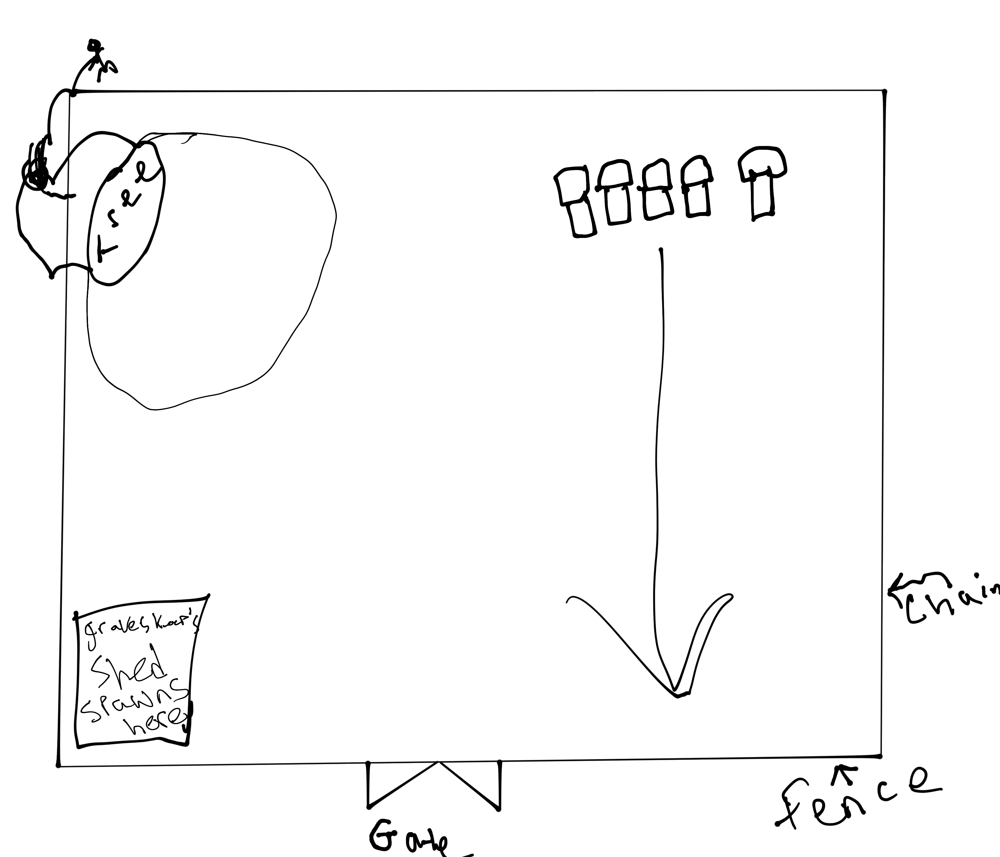
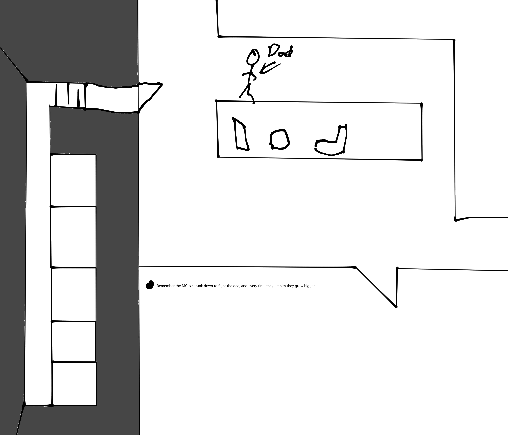

Playable game
Overwrought game linkThis was my first full project in Unreal Engine. I was able to take what I learned from my internship with Werewolf Moon Studios and applied it to this project.
I used blueprints to program this project
This is a group project that is being made with a group of six
<<<<<<< Updated upstreamgame concept follows you, the player, in your mind, dealing with past trauma by going to emotional states in your head. The main selling point of our game is the Narrative-based puzzles in the game that the player has to complete in order to unlock items which trigger different events in your life. =======
The game concept follows you, the player, in your mind, dealing with past trauma by going to emotional states in your head. The main selling point of our game is the Narrative-based puzzles in the game that the player has to complete in order to unlock items which trigger different events in your life.
>>>>>>> Stashed changes
Every event tells a story, and at every level it’s own intricate puzzle to go along with the vibe of every level.
During the development there were a lot of systems that had to be developed and managed. Such as the most challenging of these systems to develop was the keypad system. To combate this problem I followed tutorials then updated the system fit the game. After having to manage all of these systems I mastered directing objects using object object-oriented programming.
Genre: 3D First Person, Narrative-Puzzle Game.
I am the main programmer for this project and did a majority of the in-engine development. Even though I mostly focused on programming this includes level design turning a 2D level overview into a 3D playable level.
2D Overview of the Anxiety level made by the lead game designer

2D Overview of the Sadness level made by the lead game designer

2D Overview of the Anger level made by the lead game designer
